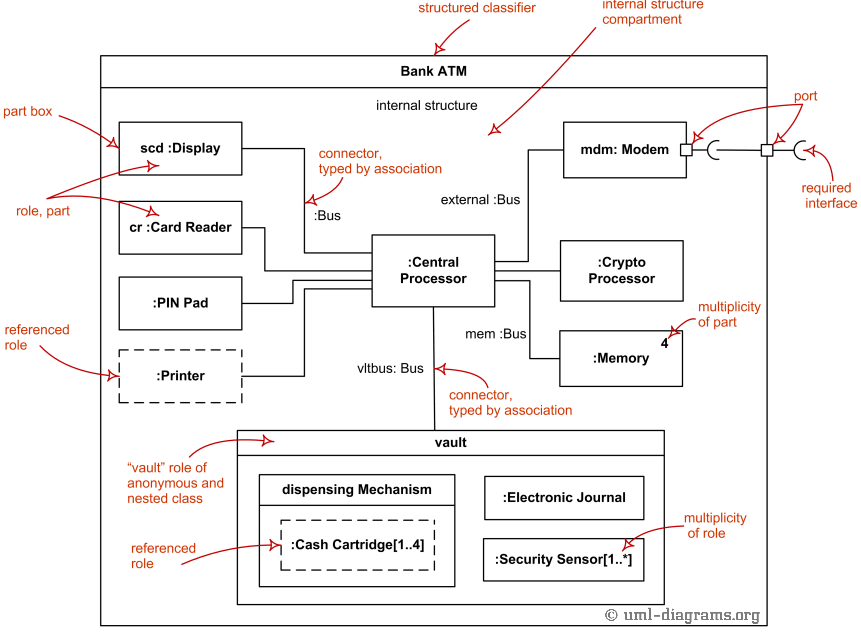
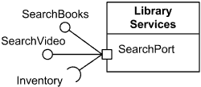
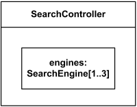
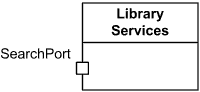

Composite Structures Reference
Internal Structure Diagrams
| Notation | Description |
|---|---|
|

Composite structure diagram overview shows elements of internal structure of structured classifier - roles, parts, connectors. |
|
| Structured Classifier | |

Structured classifier Online Shopping with its internal structure. |
Structured classifier is classifier having internal structure and whose behavior can be fully or partially described by the collaboration of owned or referenced instances. |
| Encapsulated Classifier | |
|

Library Services is classifier encapsulated through Search Port |
Encapsulated classifier is structured classifier extended with the ability to own ports. Note, that because encapsulated classifier extends structured classifier, it may also have some internal structure. |
| Structured Class | |
|
Library Services is structured class encapsulated through Search Port |
Structured class is class which may have an internal structure and ports. Structured class extends encapsulated classifier, which means that structured class is also encapsulated, i.e. can have ports. |

Structured class Online Shopping with Shopping port and internal structure. |
Structured class extends encapsulated classifier which in turn extends structured classifier. Because of that, structured class may have an internal structure. |
| Property | |

Two Data Sources is sources property - but not part - of Search Controller. |
A property which specifies an instance that is not owned using composition by the instance of the containing classifier is shown by graphical nesting of a box symbol with a dashed outline. |

Search Controller has 1 to 3 engines - Search Engine parts. |
The multiplicity for a property or part may be shown as a multiplicity mark in the top right corner of the property box. |
| Part | |
|

Search Controller has 1 to 3 engines - Search Engine part. |
Part is a property which is contained by classifier using
composition.
It means that all parts are destroyed when the containing classifier instance is destroyed.
A part is shown by graphical nesting of a box symbol with a solid outline representing the part in a separate compartment within the symbol representing the containing classifier. |
| Service Port | |
|

Library Services class has Search Port. |
Service port is used to denote classifier as provider of services with published functionality. Ports are service ports by default. Port is shown as a small square symbol. The name of the port is placed near the square symbol. |

Library Services class has 1 to 6 Search Ports. |
Multiplicity of the port (if any) is shown after the port name in square brackets. Both name and multiplicity of port are optional. |
|
Search Port provides Search Books and Search Video interfaces and requires Inventory interface. |
A provided interface may be shown using the "lollipop" notation attached to the port. A required interface may be shown using the "socket" notation attached to the port. |

1 to 6 Search Ports provide Search Books and Search Video interfaces and require Inventory interface. |
The type of a port (provided interface) may be shown after the port name, separated by colon ":". If there are multiple interfaces associated with a port, these interfaces may be listed separated by comma "," near the single interface icon. |
| Behavior Port | |

Search Port is behavior port with Search Books provided interface. |
Behavior port is a port such that requests arriving at this port are sent to the behavior of the classifier owning the port, rather than being forwarded to some contained instances. A behavior port is rendered as a port connected by a solid line to a small state symbol drawn inside the classifier containing the port. The small state symbol denotes the behavior of the containing classifier. |
Collaboration Use Diagrams
| Notation | Description |
|---|---|
| Collaboration | |
|
Collaboration extends both behaviored classifier and structured classifier to explain how a collection of cooperating instances achieve a joint task or set of tasks. Collaboration is shown as a dashed ellipse icon containing the name of the collaboration. The internal structure of a collaboration as comprised by roles and connectors may be shown in a compartment within the dashed ellipse icon. |
|

Collaboration shown as a dashed ellipse and two connected roles. Collaboration Visit shows cooperation of doctor and patient roles. |
|
| Collaboration Use | |
|
Collaboration use represents one particular use (occurrence) or application of the pattern described by a collaboration to a specific situation involving specific classes or instances playing the roles of the collaboration. A collaboration use shows how the pattern described by a collaboration is applied in a given context, by binding specific entities from that context to the roles of the collaboration. A collaboration use is shown by a dashed ellipse containing the name of the occurrence, a colon, and the name of the collaboration type. For every role binding there is a dashed line from the ellipse to the client element. The dashed line is labeled on the client end with the role name (as defined by collaboration). Note, that while the text in [UML 2.4.1 Specification] says "dashed line from .. to .." which suggests direction, there are no arrows shown on several corresponding figures. There is one figure though in the Spec, which does show arrows, so we do show arrows here as well. |
|

Collaboration use elements - roles, parts, role binding. |
|
| Collaboration Template | |
|
A collaboration could be defined as a template or/and to be bound from template collaboration(s). A collaboration template is shown by a dashed ellipse containing the name of the template and a list of formal template parameters (template signature). |
|

Collaboration template Visit with two unconstrained class formal parameters. |
|